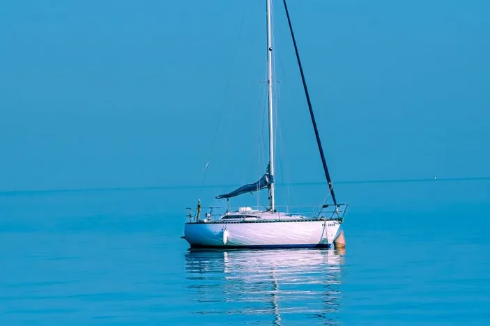

There is no single best booking platform — there is a best platform for the cruise you want. A whale-watching boat, a six-course dinner cruise and a forty-minute sightseeing loop are three different products, sold by different operators, and the platforms do not carry them equally.
Here is the short version, then the reasoning.
| If you want… | Book on | Why |
|---|---|---|
| Whale watching (mid-May to Nov) | Klook | Consistently the sharpest Sydney pricing, and it lists the major operators including Captain Cook |
| Dinner cruise | GetYourGuide | Deepest menu-tier listings — 3, 4 and 5-course options shown side by side |
| Sunset / sightseeing | Klook | Cheapest for the simple product, where price is the only real variable |
| Something unusual (private charter, tall ship, cultural) | Viator | Largest catalogue by a distance, so the long tail lives here |
| Weather-risky dates | GetYourGuide | The most consistent free-cancellation policy of the three |

Why the answer changes by cruise type
Sydney’s harbour cruises are run by a relatively small number of operators — Captain Cook Cruises and a handful of others run most of what you’ll see listed. The platforms are resellers of those same boats.
So the question is never “which company is better at cruises”. It is:
- Does this platform list the operator I want?
- What is the price for this specific sailing?
- What happens if the weather turns?
Those three answers move independently, which is why a blanket recommendation fails.
Platform by platform, for this specific tour
| Klook | GetYourGuide | Viator | |
|---|---|---|---|
| Sydney pricing | Usually the cheapest | Mid | Mid |
| Catalogue size | Good in Asia-Pacific | Good | Largest overall (400,000+ experiences) |
| Cancellation | Varies by listing | 24h free, most consistently applied | 24h free on most listings |
| Dinner-cruise tiers | Listed | 3 / 4 / 5-course shown clearly | Listed |
| Whale operators | Captain Cook and others | Includes a 95% sighting guarantee listing | Wide selection |
| Strongest for | Price | Policy clarity | Choice |
Klook has Asia-Pacific roots, and that shows in Australia: it is repeatedly the cheapest of the three for Sydney, and it carries the main harbour operators. If you already know which cruise you want, this is usually where it costs least.
GetYourGuide is the one to use when the terms matter more than the price. Its 24-hour free-cancellation default is applied more consistently than the others’, which is worth real money on a weather-dependent booking. Its dinner-cruise listings also break out the menu tiers clearly, which makes comparing a three-course against a six-course straightforward.
Viator wins on sheer breadth — it lists far more experiences than either, so anything unusual is most likely to exist there. The trade-off is that a bigger catalogue means more near-identical listings to sort through.

The cancellation question, which matters more here than usual
Harbour cruises are weather-dependent in a way museum tickets are not. A southerly change can turn a sunset cruise into a cold, wet two hours, and whale-watching boats go out through the Heads into open ocean.
Before you compare prices, read the cancellation line on the specific listing:
- Free cancellation up to 24 hours is the common standard, but it is applied per listing, not per platform.
- Operator-cancelled sailings (weather) are normally refunded or rescheduled — but check whether the platform refunds or issues credit.
- Whale “guarantees” are usually a free re-sail, not a refund. Fine if you’re in Sydney for a week; useless if you fly out tomorrow.
Being straight about our links
We have affiliate relationships with Klook, KKday, Tiqets, WeGoTrip and Go City, so those are the ones we can link. We do not have one with Viator or GetYourGuide, and we have named them above anyway, because leaving them out would have made this comparison useless to you.
You can check Sydney harbour cruises on Klook — the usual price winner — and cross-check KKday, which sometimes undercuts on the same sailing. For attraction tickets you’re pairing with the cruise, Tiqets is often the cleaner option, and if you’re visiting several paid sights in a few days a Go City pass can include a harbour cruise — check the arithmetic against what you’d actually visit first.
How to check it yourself in two minutes
- Decide the cruise type first — whale, dinner, sunset, or something specific.
- Find the operator name on any listing. That’s your real search term.
- Search that operator on two platforms and compare the same sailing, same date.
- Read the cancellation line on both before choosing.
- Check the ferry alternative. For a plain sightseeing loop, the Manly ferry on an Opal card covers the same view for a normal fare — see which Sydney cruise is actually worth booking.
For the wider trip, Sydney: the places worth your time and your first visit to Sydney cover what’s around the harbour, and getting around Sydney explains the Opal fares that make the ferry option so cheap.
Frequently asked questions
Which site is cheapest for a Sydney harbour cruise? Klook is the most consistent price winner for Sydney, reflecting its strength across Asia-Pacific. That said, the same sailing can differ by platform on any given date, so it is worth checking a second site before booking.
Is Klook or Viator better for Sydney cruises? Klook for price and for the main harbour operators; Viator for choice, since it lists far more experiences overall and is where unusual options — private charters, tall ships, cultural cruises — are most likely to appear.
Which platform has the best cancellation policy for cruises? GetYourGuide applies a 24-hour free-cancellation default most consistently, which matters on a weather-dependent booking. All three commonly offer 24-hour free cancellation, but it is set per listing, so read the specific line.
Where should I book a Sydney whale-watching cruise? Klook usually has the sharpest price and lists the major operators. Note that whale “guarantees” are normally a free re-sail rather than a refund, and the season runs mid-May to the end of November.
Do I need to book a Sydney harbour cruise in advance? For dinner cruises and peak-season whale watching, yes — those sell out. A plain sightseeing cruise can usually be booked the same day, and the Manly ferry needs no booking at all.
Sources & further reading
- Platform listings for Sydney harbour, whale-watching and dinner cruises on Klook, Viator and GetYourGuide, 2026
- Comparative reviews of Klook, GetYourGuide and Viator pricing and cancellation policies, 2026
Prices, listings and cancellation terms change per sailing and per platform. Check the specific listing before booking. This article contains affiliate links to the platforms named above where we have a relationship; if you book through them we may earn a commission at no extra cost to you.
Frequently asked questions
Which site is cheapest for a Sydney harbour cruise?
Klook is the most consistent price winner for Sydney, reflecting its strength across Asia-Pacific. The same sailing can still differ by platform on any given date, so check a second site before booking.
Is Klook or Viator better for Sydney cruises?
Klook for price and for the main harbour operators; Viator for choice, since it lists far more experiences overall and is where unusual options such as private charters, tall ships and cultural cruises are most likely to appear.
Which platform has the best cancellation policy for cruises?
GetYourGuide applies a 24-hour free-cancellation default most consistently, which matters on a weather-dependent booking. All three commonly offer 24-hour free cancellation, but it is set per listing, so read the specific line.
Where should I book a Sydney whale-watching cruise?
Klook usually has the sharpest price and lists the major operators. Whale guarantees are normally a free re-sail rather than a refund, and the season runs from mid-May to the end of November.
Do I need to book a Sydney harbour cruise in advance?
For dinner cruises and peak-season whale watching yes, because those sell out. A plain sightseeing cruise can usually be booked the same day, and the Manly ferry needs no booking at all.
Keep reading on Gently Yonder
- Sydney Harbour Cruises: Which One Is Worth Booking — Five different products share one word — whale season, the dinner tiers, the Clark Island cultural cruise, and the ferry that costs an Opal fare.
- Sydney: The Places Worth Your Time — The Opera House and Harbour Bridge, The Rocks, Bondi and the coastal walk, Manly by ferry — what's genuinely worth the hours.
- Getting Around Sydney — The Opal card and contactless fares, trains as the backbone, the harbour ferries, and the honest airport options.
- Klook vs Viator vs GetYourGuide — Which tours-and-activities platform to use where — Asia, Europe, and global.
- Where to Book a Bangkok Dinner Cruise — KKday for the cheapest Chao Phraya boats; Klook for the headline vessels and clearer piers — but the sunset departure saves more than either.
- How to Save Money on International Travel — The seven levers that actually move the number — paying in local currency, eSIM over roaming, flexible dates, and the pass arithmetic.